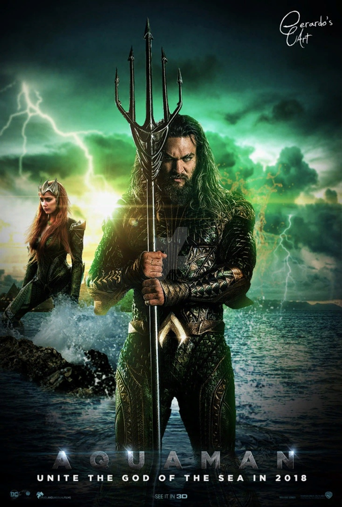

Aquaman
Артур Карри был сыном работника маяка по имени Том Карри и женщины по имени Атланна. Артур уже в подростковом возрасте демонстрировал невероятную силу и скорость, а также возможность дышать под водой и разговаривать с рыбами. Будучи при смерти, Атланна раскрыла мальчику правду: она была Королевой Атлантиды, находившейся в изгнании, и пообещала, что однажды Артур станет правителем семи морей. Его отец дал ему образование и научил управлять своими возможностями, что в конечном итоге помогло ему стать героем по имени Аквамен.